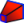

Description
Lissage soustractif crée un solide soustractif dans le corps actif en effectuant une transition entre deux esquisses ou plus (également appelés coupes transversales). Sa forme est ensuite soustraite du solide existant.
Disponible dans la version 0.17
- Appuyer sur le bouton Lissage soustractif.
- Dans la boîte de dialogue Sélectionner la fonction, sélectionner une esquisse à utiliser comme première section et cliquer sur OK.
- * Vous pouvez également sélectionner une seule esquisse avant d'appuyer sur le bouton Lissage soustractif.
- Dans les paramètres Lissage, appuyer sur le bouton Ajouter une section.
- Sélectionner une esquisse dans la vue 3D. Répéter pour sélectionner d'autres esquisses.
- Définir les options si nécessaire et cliquer sur OK.
Options
- Surface réglée: effectue des transitions droites entre les sections. Dos ne s'applique pas à un lissage avec deux sections transversales. Si ce n'est pas coché, les transitions seront faciles.
- Fermé: effectue une transition de la dernière section à la première, en créant une boucle.
- Appuyer sur le bouton Retirer une Section pour supprimer une esquisse en la sélectionnant dans la vue 3D.
Propriétés
- DONNÉES Label: nom donné à l'opération, ce nom peut être changé à la convenance.
- DONNÉES Sections: liste les sections utilisées.
- DONNÉES Ruled: voir Options.
- DONNÉES Closed: voir Options.
- DONNÉES Midplane: N / A
- DONNÉES Reversed: N / A
- DONNÉES Refine: vrai ou faux. Si la valeur est "true" (vrai), nettoie le solide des bords résiduels laissés par les entités. Voir Affiner la forme pour plus de détails
Limites
- Les esquisses doivent être toutes fermées.
- Il n'est pas possible de faire un lissage avec un sommet.
- Une section ne peut pas être sur le même plan que celle qui la précède.
- Pour un meilleur résultat sur le lissage, il est recommandé que toutes les sections aient le même nombre de segments. Par exemple, pour un lissage entre un rectangle et un cercle, le cercle peut être décomposé en 4 arcs connectés.
Liens
{kind=link}